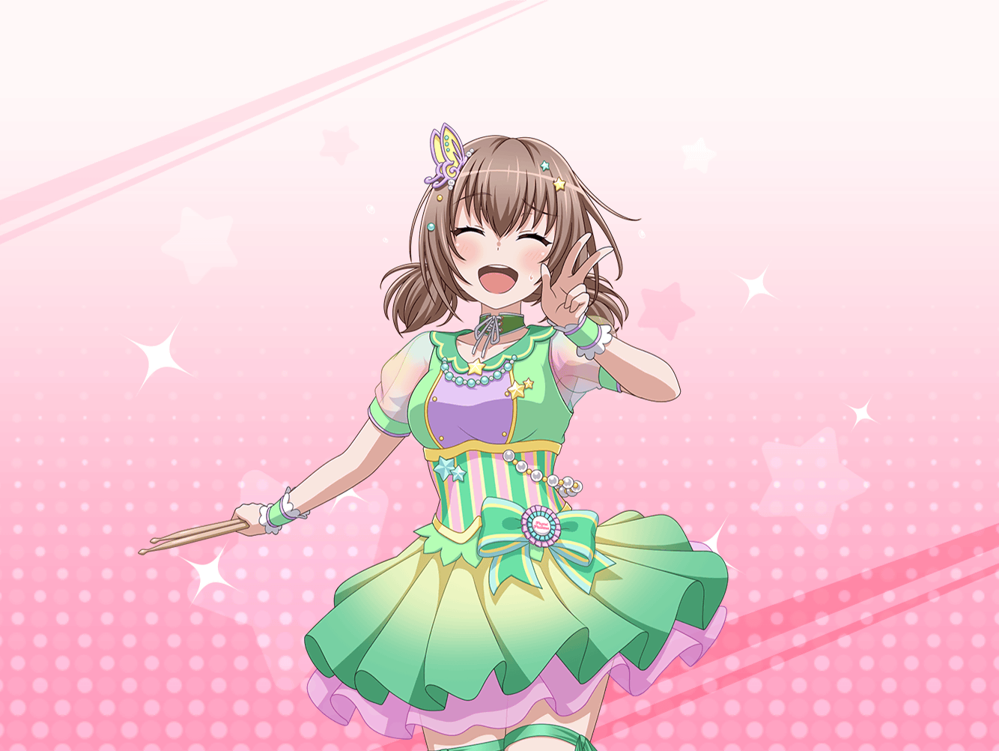

楽屋
麻弥
ほへ〜〜〜〜〜、無事終わったあ〜〜〜……
千聖
お渡し会、お疲れさま、麻弥ちゃん。
ふふ、緊張の糸が切れたって感じね
麻弥
は！ ち、千聖さん！
なんとか無事に終わってよかったです……
千聖さんも、お疲れさまでした！
千聖
ありがとう。
初めてファンの人と直接話してみた感想は？
麻弥
そうですね……緊張もしましたけど、
すっごく、楽しかったです！
千聖
そうね、お客さんも楽しんでくれていたし、
いいイベントになったと思うわ
麻弥
何だか終わってしまうのが、
残念な気がしますね
麻弥
ファンの人達や、会場の熱気を思い出すと、
まだ何だかふわふわしてしまいます
千聖
ふふっ、そうね。
みんな熱心に応援してくれたもの
千聖
今日、会いに来てくれた人が、
みんな私達のファンなのよ、麻弥ちゃん
麻弥
……あんなにたくさんの人が、ジブン達のファン……
麻弥
……まだ、信じられません。
あんなにたくさんの人が来てくれて……
麻弥
ジブンなんかのところにも、
いっぱい並んでくれて……
麻弥
しかも、みなさんお褒めの言葉や、応援の言葉を
かけてくださって……
千聖
みんな、温かい言葉をくれてよかったわね。
昔じゃ考えられないくらい……
千聖
でもね、麻弥ちゃん。
『ジブンなんか』って言うのはちょっとよくないわね？
麻弥
すみません！
ジブン、また……
千聖
ファンの人達は、麻弥ちゃんを本当にステキだと思っているから
麻弥ちゃんのレーンに並ぶの
千聖
そうして、麻弥ちゃんに伝えたいことを
伝えに来てくれる
千聖
そうやって、かけてくれた言葉なんだから、
『ジブンなんか』なんて、言い方をしていたら、
ファンの人達にも失礼になるわ
麻弥
はっ……！ 確かに！
千聖さんのおっしゃる通りですね……！
千聖
次からはもっと自信を持って、
ファンの人に応援してくれてありがとう、って
言えるようになれるといいわね♪
千聖
その方が、ファンにとっても
麻弥ちゃんにとっても、ステキなお渡し会になるもの
麻弥
はい！ そうなれるように……ジブンなんか、なんて
思わないように、がんばりますっ！
千聖
麻弥ちゃんの謙虚なところは、とても素敵だと思うわ
千聖
謙虚だからこそ、一生懸命努力をするし、
人気が出ても、驕ったりしない
千聖
アイドルとして、それはすごく
大事なことだと思う
千聖
でも、謙虚は長所にも短所にもなりうるのよ
麻弥
そうですね……
行き過ぎた謙虚は卑屈にも見えますし……
うん、反省しなくては
麻弥
ジブンなんか、なんて思わなくていい……
これは、彩さんからも教わったことです。
ジブン、もっと実践できるようになっていきたいです
千聖
ふふっ、麻弥ちゃんは可愛いし、
演奏も上手なんだから、もっと自信を持っていいのよ
麻弥
フヘヘ、そんな……何だか照れちゃいますね……ではなくて！
う、うう、嬉しいです！
麻弥
これからはもっともっと、ファンの方にお礼を言えるように……
それから、ドラマーとしてもっともっといい演奏も
できるように、がんばりますっ！
千聖
ええ。
一緒に頑張りましょうね、麻弥ちゃん
麻弥
はい！
千聖さん、ありがとうございます！